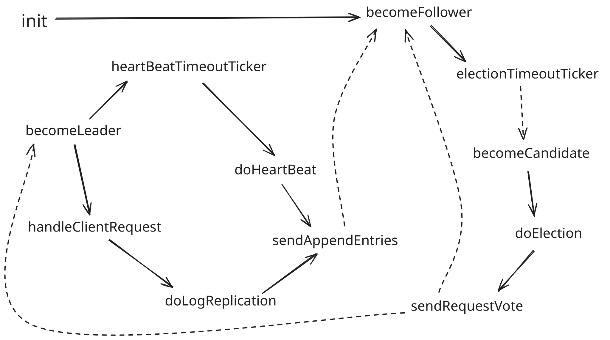
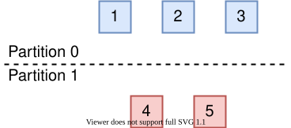

RAFT 分布式一致性算法（实现篇）
状态机切换流程

初始化
初始化流程主要包括从磁盘中加在持久化配置，将自己的状态设为 Follower
init：从磁盘中加在持久化配置，将自己的状态设为 Follower
becomeFollower：状态机切换为 Follower，执行 Follower 的处理流程
int init()
{
// 1. 读取初始化配置（from 本地磁盘）
currentTerm = read_file(currentTerm);
votedFor = read_file(voteFor);
prevLogIndex = get_prev_log_index(read_file(log[]));
prevLogTerm = get_prev_log_term(read_file(log[]));
// 2. 将自己的状态设置为Follower
becomeFollower();
return 0;
}主要功能模块
请求响应模块
所有结点都可以响应客户端的读请求
仅 Leader 结点响应客户端写请求，如果客户端发送到了 Follower ，则其会通过 leaderId 返回 Leader 的位置
handleClientRequest：Leader 线程，用于处理客户端请求
sendRequest：发送同步请求并收集响应，如果获得超半数的确认，则返回 true
doLogReplication：对每个结点发送包含当前请求的 sendAppendEntries RPC
void handleClientRequest(){
while (status == Leader){
int n = epoll_wait(...);
for(socket_fd in socket_fd_list){
if (status != Leader)
break;
request_log = getLogFromRequest(sock_fd);
// 当前请求执行失败意味着出现了网络分区
bool is_commited = sendRequest();
if (!is_commited)
break;
}
for(not commited request socket_fd)
sendRejectMessage(socket_fd);
}
}bool sendRequest(){
// 将当前请求持久化
log.append(request_log);
persist();
commited_sevrer_count = 1;
// 发送日志同步请求
doLogReplication();
while (commitedSevrerCount < server_list.size() / 2 + 1){
// 超时未收到过半的结点响应
if (requestTimeout == true)
return false;
commitedSevrerCount = getCommitedServerCount(commitedSevrerList)
sleep(tick);
}
return true;
}
void doLogReplication(){
appendEntriesArgs->set_term(currentTerm);
appendEntriesArgs->set_leaderid(id);
appendEntriesArgs->set_prevlogindex(prevlogindex);
appendEntriesArgs->set_prevlogterm(prevlogterm);
appendEntriesArgs->set_leadercommit(leaderCommit);
appendEntriesArgs->set_entries(request_log);
heartBeatTimer.reset();
for (each server in server_list){
if (status!=Leader)
break;
thread_pool_add_work(sendAppendEntries,server_id,appendEntriesArgs);
}
}心跳处理与日志同步模块
当心跳时钟到点后，对其他结点发送心跳以告知 Leader 的存活
becomeLeader：状态机切换为 Leader，执行 Leader 的处理流程
heartBeatTimeoutTicker：时钟到点后触发心跳发布流程
doHeartBeat：如果其他结点与 Leader 日志状态一致则只发送心跳，否则发送最后一条日志来逐个同步
sendAppendEntries：对每个结点发送 sendAppendEntries RPC 以刷新 electionTimeout 以及同步日志。如果当前 Leader 的 term 落后集群，则主动退位为 Follower，调用 becomeFollower
appendEntriesRPC：同步状态与日志，若不满足日志同步条件则返回 false
// Leader
void becomeLeader(){
status = Leader;
thread_pool_add_work(handleClientRequest,NULL);
while (status == Leader){
heartBeatTimeoutTicker();
sleep(tick);
}
}
void heartBeatTimeoutTicker(){
// 条件满足时进入心跳流程
if(heartBeatTimeout is finished){
doHeartBeat();
}
}
// 发送心跳与同步日志
void doHeartBeat(){
// 默认仅发送心跳
appendEntriesArgs->set_term(currentTerm);
appendEntriesArgs->set_leaderid(id);
appendEntriesArgs->set_leadercommit(leaderCommit);
appendEntriesArgs->set_prevlogindex(-1);
appendEntriesArgs->set_prevlogterm(-1);
appendEntriesArgs->set_entries([]);
heartBeatTimer.reset();
for (each server in server_list){
if (status!=Leader)
break;
// 如果日志状态不同步，则发送最后一条日志来逐个同步
if (nextIndex[server_id] != prevlogindex){
appendEntriesArgs->set_prevlogindex(prevlogindex);
appendEntriesArgs->set_prevlogterm(prevlogterm);
appendEntriesArgs->set_entries(entries);
}
thread_pool_add_work(sendAppendEntries,server_id,appendEntriesArgs);
}
}
Status sendAppendEntries(int server_id, AppendEntriesArgs &appendEntriesArgs){
Status status = stub_->appendEntriesRPC(&context, appendEntriesArgs, &reply);
if (!status.ok())
return connectFailed;
if (currentTerm < reply->term()){
currentTerm = reply->term();
votedFor = -1;
persist();
thread_pool_add_work(becomeFollower,NULL);
return failedCampaign;
}
// 仅处理心跳
if (appendEntriesArgs->log() == [])
return success;
// 日志同步(采用线形探测)
if(reply->success() == true){
commitedSevrerCount[server_id] = 1;
return success;
}
else{
nextIndex[server_id]--;
int con_preLogIndex = getpreLogIndex(nextIndex[server_id]);
int con_preLogTerm = getpreLogTerm(nextIndex[server_id]);
LogEntries entries = getLogEntries(nextIndex[server_id]);
appendEntriesArgs->set_prevlogindex(con_preLogIndex);
appendEntriesArgs->set_prevlogterm(con_preLogTerm);
appendEntriesArgs->set_entries(entries);
sendAppendEntries(server_id, AppendEntriesArgs &appendEntriesArgs);
}
}// appendEntriesRPC
Status appendEntriesRPC(ServerContext* context, const AppendEntriesArgs *appendEntriesArgs, AppendEntriesReply* reply) override {
// Leader 落后当前结点
if (currentTerm < appendEntriesArgs->term()){
reply->set_term(currentTerm);
reply->set_success(false);
return Status::OK;
}
electionTimer.reset(); // 只有当前 Leader 合法，才刷新 electionTimeout
// 更新状态
else if (currentTerm < appendEntriesArgs->term()){
currentTerm = appendEntriesArgs->term();
voteFor = -1;
persist();
if (status != Follower){
thread_pool_add_work(becomeFollower,NULL);
reply->set_term(currentTerm);
reply->set_success(false);
return Status::OK;
}
}
else{
leaderCommit = appendEntriesArgs->leaderCommit();
}
leaderId = appendEntriesArgs->leaderId();
// 同步日志
if(log[appendEntriesArgs->prevLogIndex()] == appendEntriesArgs->prevLogTerm()){
log.erase(appendEntriesArgs->prevLogIndex(),prevLogIndex); // start,end
log.append(appendEntriesArgs->entries());
persist();
reply->set_term(currentTerm);
reply->set_success(true);
return Status::OK;
}
else{
reply->set_term(currentTerm);
reply->set_success(false);
return Status::OK;
}
}主从选举模块
如果选举时钟超时则触发选举流程，将自己的状态切换为 Candidate，调用 becomeCandidate
becomeFollower：维护选举时钟
electionTimeoutTicker：选举时钟到点后触发选举流程
// Follower
void becomeFollower(){
status = Follower;
while(status == Follower){
// 判断选举时钟是否超时
if(electionTimeoutTicker() == true)
break;
sleep(tick);
}
}
bool electionTimeoutTicker(){
// 条件满足时进入选举流程
if(electionTimeout is finished){
thread_pool_add_work(becomeCandidate,NULL);
return true;
}
return false;
}becomeCandidate：切换状态为 Candidate ，进入选举流程
doElection：设置选举消息并开始选举
sendRequestVote：对其他结点调用 requestVoteRPC ，如果获得了超过半数的选票则切换为 Leader ，调用 becomeLeader
requestVoteRPC：根据自身状态与选举约束决定是否投该 Candidate
// Candidate
void becomeCandidate(){
status = Candidate;
doElection();
}
void doElection(){
currentTerm += 1;
votedFor = id; //即是自己给自己投，也是避免自己给其他的Candidate投
persist(); // 状态持久化(currentTerm,voteFor)
// 设置requestVoteRPC的request参数
requestVoteArgs->set_term(currentTerm);
requestVoteArgs->set_candidateid(id);
requestVoteArgs->set_prevlogindex(prevLogIndex);
requestVoteArgs->set_prevlogterm(prevLogTerm);
// 重置选举时钟
electionTimer.reset();
// 清空选举列表（用列表记录所有结点的投票结果，而不只统计票数，防止一个结点因为网络重传等原因投了多票）
vote_list.reset();
tickets = 1; // 投给自己
for (each server in server_list){
if (status != Candidate) // 在选举过程中可能自己会退化为Follower，发送前判断避免无效通信
break;
// 使用线程池异步发送选举请求（若采用同步则每次至少需要等2个RTT）
thread_pool_add_work(sendRequestVote,server_id,requestVoteArgs,vote_list,tickets);
}
}
Status sendRequestVote(int server_id,RequestVoteArgs *requestVoteArgs, vector<bool> &vote_list,int &tickets){
// client调用requestVoteRPC服务
Status status = stub_->requestVoteRPC(&context, requestVoteArgs, &reply);
if (!status.ok())
return connectFailed;
// Follower term > Candidate term（说明当前Candidate已落后集群中至少一半结点，退化为Follower）
if (currentTerm < reply->term()){
status = Follower;
currentTerm = reply.term;
voteFor = -1;
persist();
if (status!=Follower)
thread_pool_add_work(becomeFollower,NULL);
return failedCampaign；
}
// 其他拒绝的情况（详见server的requestVoteRPC服务）
if (reply->voteGranted() == false){
if (status != Follower)
thread_pool_add_work(becomeFollower,NULL);
return failedCampaign;
}
// 获得选票
if (vote_list[server_id]!=0){
tickets++;
// 获得集群中所有结点超过半数选票则当选，成为Leader
if (tickets >= server_list.size() / 2 + 1){
if (status != Leader)
thread_pool_add_work(becomeLeader,NULL);
return winCampaign;
}
}
}// requestVoteRPC
// 注：本轮的Candidate也会收到其他Candidate发送的投票请求
Status requestVoteRPC(ServerContext* context, const RequestVoteArgs *requestVoteArgs, RequestVoteReply* reply) override {
// 选举约束1:Candidate term < currentTerm（Candidate刚经历网络分区）
if (requestVoteArgs->term() < currentTerm) {
reply->set_term(currentTerm);
reply->set_voteGranted(false);
return Status::OK;
}
// 选举约束2: 如果 term 相同，那 log entry index 更大（即更长）的那个 Candidate 胜出
// requestVoteArgs->term() >= currentTerm)
currentTerm = requestVoteArgs->term();
persist();
reply->set_term(currentTerm);
// 已经投过票
// 1. 投的是当前Candidate（消息重传）
if(voteFor == requestVoteArg->candidateid()){
reply->set_voteGranted(true);
return Status::OK;
}
// 2. 投的是其他Candidate
else if(voteFor != -1){
reply->set_voteGranted(false);
return Status::OK;
}
// 没有投过票（根据本地log entries判断）
// 1. lastLogTerm
if (requestVoteArgs->lastLogTerm() >= lastLogTerm){
votedFor = requestVoteArgs->candidateid;
persist();
reply->set_voteGranted(true);
return Status::OK;
}
// 2. lastLogIndex
else if (requestVoteArgs->lastLogTerm() == lastLogTerm){
if (requestVoteArgs->lastLogIndex() >= lastLogIndex){
votedFor = requestVoteArgs->candidateid;
persist();
reply->set_voteGranted(true);
return Status::OK;
}
}
reply->set_voteGranted(false);
return Status::OK;
}辅助处理模块
持久化模块
采用COW（写时拷贝），如果状态或日志没有变化则不刷盘
采用 protobuf 做序列化后写入文件，提高读写效率
void persist() {
if (status not changed) // copy on write
return;
persistRaftNode.currentTerm = currentTerm;
persistRaftNode.votedFor = votedFor;
for (item in entries) {
persistRaftNode.log.push_back(item);
}
write_to_file(file_path,persistRaftNode.SerializeAsString());
}其他优化
预选举机制（Pre-Vote）
当 Raft 集群的网络发生分区时，会出现节点数达不到 quorum（达成共识至少需要的节点数）的分区

在节点数能够达到 quorum 的分区中，选举流程会正常进行，该分区中的所有节点的 term 最终会稳定为新选举出的 Leader 节点的term。不幸的是，在节点数无法达到 quorum 的分区中，如果该分区中没有 Leader 节点，因为节点总是无法收到数量达到quorum的投票而不会选举出新的 Leader ，所以该分区中的节点在 election timeout 超时后，会增大 term 并发起下一轮选举，这导致该分区中的节点的term会不断增大。
如果网络一直没有恢复，这是没有问题的。但是，如果网络分区恢复，此时，达不到 quorum 的分区中的节点的 term 值会远大于能够达到 quorum 的分区中的节点的 term ，这会导致能够达到 quorum 的分区的 Leader退位（step down）并增大自己的 term 到更大的term，使集群产生一轮不必要的选举。
Pre-Vote 机制就是为了解决这一问题而设计的，其解决的思路在于不允许达不到 quorum 的分区正常进入投票流程，也就避免了其 term 号的增大。为此，Pre-Vote 引入了“预投票”，也就是说，当节点 election timeout 超时时，它们不会立即增大自身的 term 并请求投票，而是先发起一轮预投票。收到预投票请求的节点不会退位。只有当节点收到了达到 quorum 的预投票响应时，节点才能增大自身term 号并发起投票请求。这样，达不到 quorum 的分区中的节点永远无法增大 term ，也就不会在分区恢复后引起不必要的一轮投票。